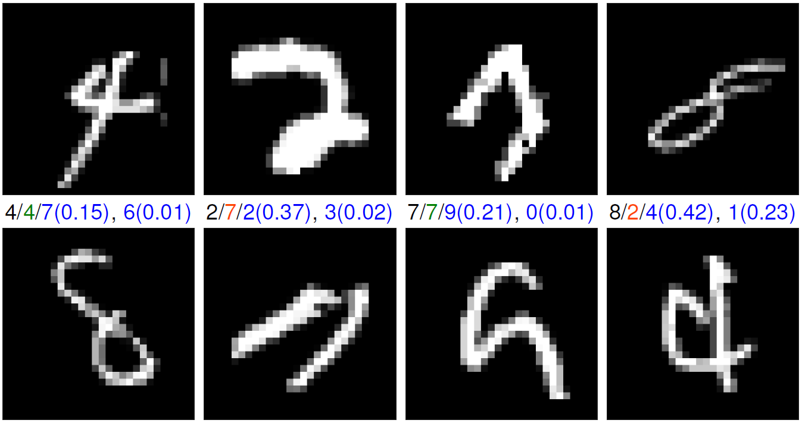

Sparse binary logistic regression
Logistic regression has been extensively used to perform classification in machine learning and signal/image processing. Bayesian formulations of this model with sparsity-inducing priors are particularly relevant when one is interested in drawing credibility intervals with few active coefficients. Along these lines, the derivation of efficient simulation-based methods is still an active research area because of the analytically challenging form of the binomial likelihood. This paper tackles the sparse Bayesian binary logistic regression problem by relying on the recent split-and-augmented Gibbs sampler (SPA). Contrary to usual data augmentation strategies, this Markov chain Monte Carlo (MCMC) algorithm scales in high dimension and divides the initial sampling problem into simpler ones. These sampling steps are then addressed with efficient state-of-the-art methods, namely proximal MCMC algorithms that can benefit from the recent closed-form expression of the proximal operator of the logistic cost function. SPA appears to be faster than efficient proximal MCMC algorithms and presents a reasonable computational cost compared to optimization-based methods with the advantage of producing credibility intervals. Experiments on handwritten digits classification problems illustrate the performances of the proposed approach.

Fig. 1: MNIST one-vs-all experiment: Example of 8 handwritten digits identified as possibly misclassified by SPA (under 90% credibility intervals). The true label (black), the predicted one (green for correct decisions and orange for wrong ones), the second and third most probable labels (blue) and their respective weight (blue) are depicted at the bottom of each sub-figure.
The results are reported in the paper presented at IEEE Workshop on Machine Learning for Signal Processing (MLSP 2018):
- paper
 .
.
At the core of the proposed approach, the split-and-augmented (SPA) Gibbs sampler is presented here and in paper published in IEEE Trans. Signal Processing :
- paper .
Actually, the SPA Gibbs sampler targets a probability density derived from an asymptotically exact data augmentation. This framework is described here and in the submitted paper:
- paper
 .
.
The corresponding Matlab codes are available on Maxime Vono's GitHub.
- matlab codes
 .
.